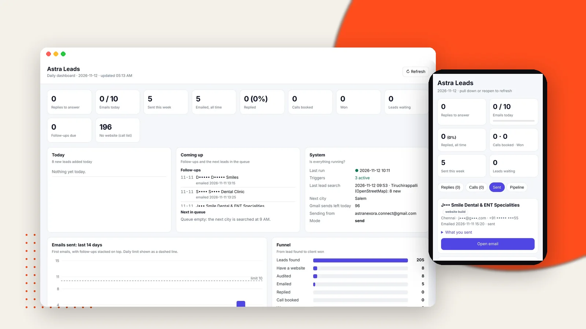
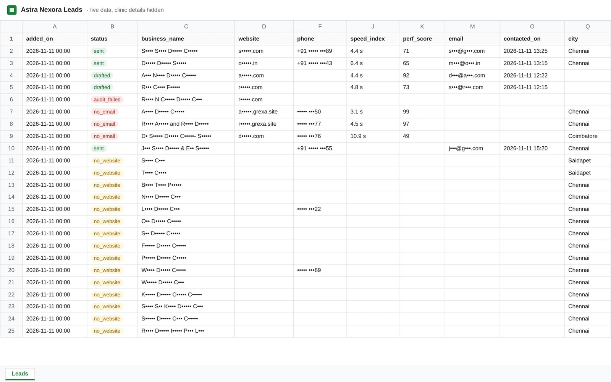
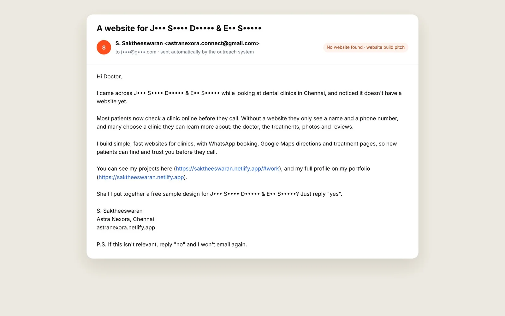
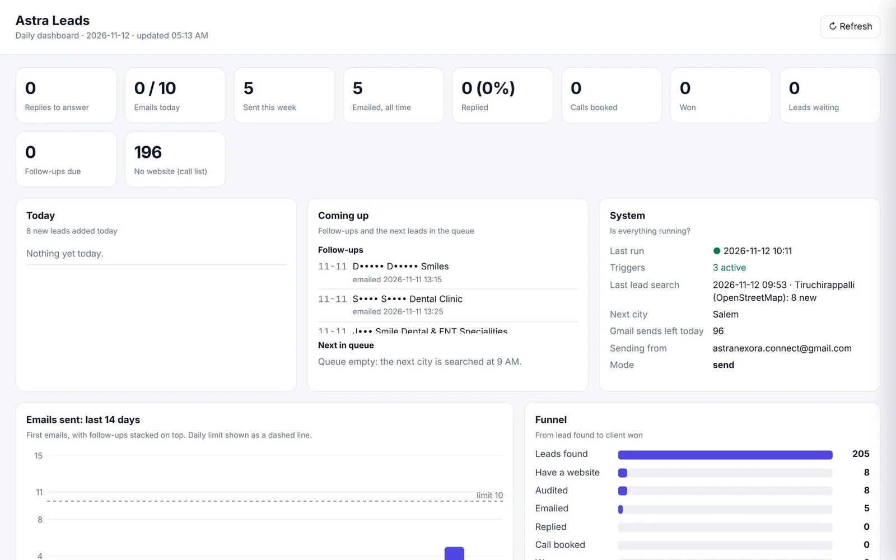
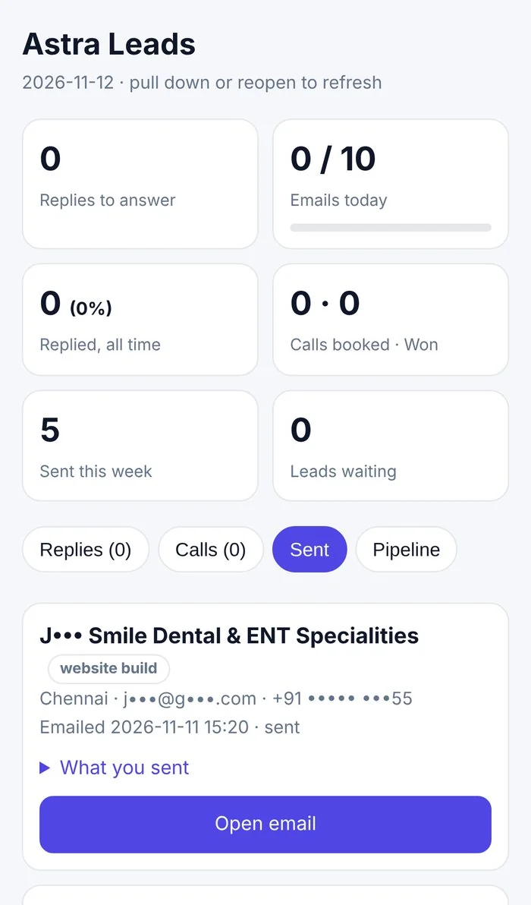
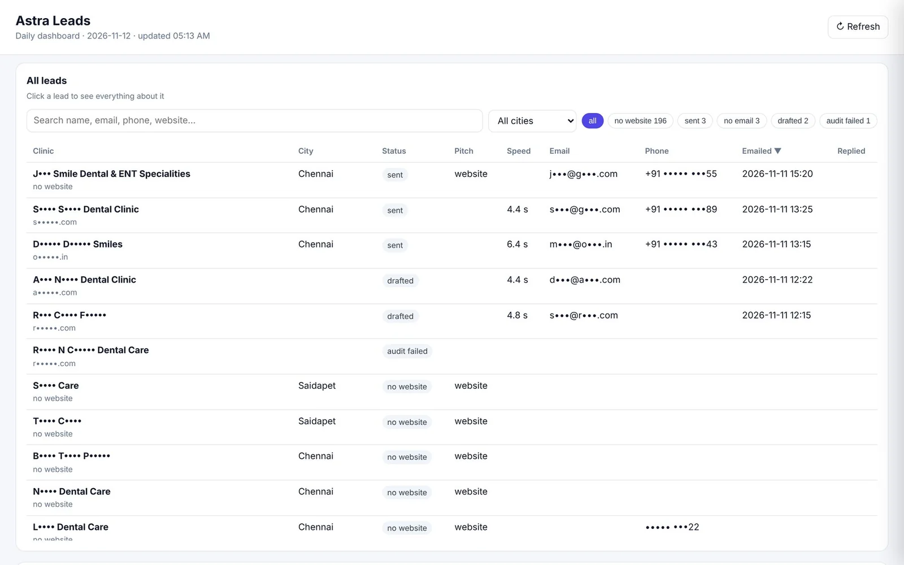
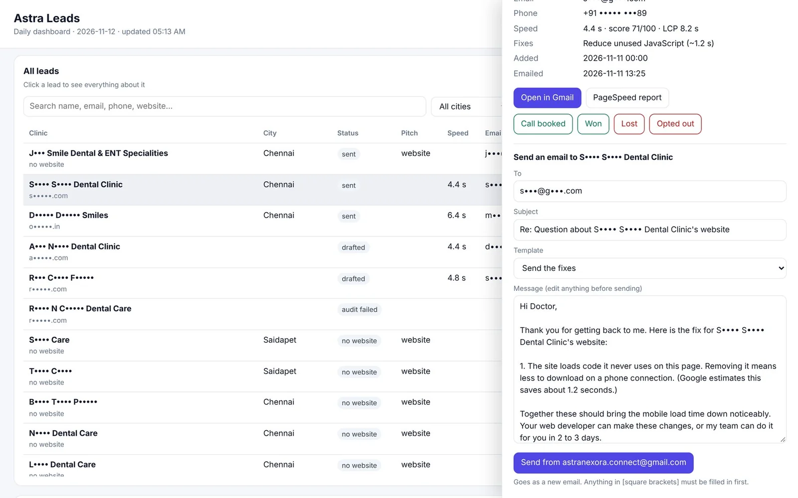

Astra Nexora – Automated Lead Outreach System
A system that finds potential clients, checks each website's speed, sends a personal email, follows up once and catches every reply, every weekday, at zero running cost.

- The problem
Finding clients, checking each website and writing every email by hand took 15 to 20 minutes per client, so outreach kept losing out to client work.
- The solution
A system that finds businesses, tests each website's speed, finds the right email and sends a personal message, follows up once and catches every reply.
- The result
Lead research to a personalised email in under a minute per client, every weekday, on its own, at zero running cost.
01The challenge
Outreach is how an agency finds new clients, but doing it properly is slow. For every potential client I had to find the business and its website, open it on a phone, run a speed test, look for an email address, write an email about what I actually found, and remember to follow up and track who replied. That's 15 to 20 minutes per client, so with client work every day, outreach was always the first thing to drop.
Mass emails weren't an option either. A business owner ignores a generic "we do websites" email, and sending lots of identical emails gets a Gmail account flagged as spam, which would hurt the agency's real email too.
02My approach
Automate the research, not the relationship. The slow, repetitive parts (searching, testing, finding the email, writing the first draft) are done by the system. The conversation stays human: every reply comes back to me, and I decide what to send.
Four rules shaped it. Personal: every email is about the client's own website, its real load time and the fixes Google suggests. Honest: fast websites are skipped, and every email links to the public Google report. Slow: at most 10 emails a day, one every 10 minutes, weekdays 10 AM to 6 PM. Polite: one follow-up only, an easy opt-out in every email, and anyone who says no is never contacted again.
The solution, step by step
Find potential clients
Each weekday morning the system searches the next city on its list for the target type of business using OpenStreetMap, which is free and needs no API key, and saves the name, website, phone and address to a Google Sheet. Duplicates are skipped, businesses without a website are kept for a different pitch, and leads can also be added by hand.

Analyse the website
Every website is tested with the Google PageSpeed Insights API in mobile mode. The system saves the Speed Index, the 0 to 100 performance score, Largest Contentful Paint and the two fixes Google estimates would save the most time. Websites that load in 3 seconds or less are marked fast and skipped.
Find the right email
The system reads the business's own home, contact and about pages, decodes addresses hidden from bots, prefers addresses on the business's own domain, and ignores the web designer's email in the footer and noreply addresses. If none is found, the lead is kept for a phone call instead.
A personal email, written for each business
Slow websites get a short email with the real load time and score, a link to the public Google report and an offer of the two fixes for free. Businesses without a website get an offer to build one, with links to my projects. The only ask is a one-word reply: yes.

One follow-up, then catch every reply
If there's no reply in three days, one short follow-up goes out in the same conversation. Every 10 minutes the system checks Gmail for replies and bounces, stars and labels them so the phone notifies me, and moves them to the top of the dashboard.
Laptop and phone dashboards
The same private link opens a full dashboard on a laptop (today's numbers, what's coming up, system health, emails per day and the funnel from lead to client) and a compact app-like view on the phone with Replies, Calls, Sent and Pipeline tabs.


Every lead, searchable
All leads in one table: search by name, email, phone or website, filter by city and status, sort any column, and open a lead to see every detail.

Template replies
When a client replies, the right answer is already drafted: send the fixes, sample design, price, book a call or a polite close. I read it, edit if needed and send it from the agency's Gmail in the same conversation. Anything in square brackets must be filled in before it can go.

What changed
- Went live in November 2026: 205 businesses found in three cities in the first two days
- 8 websites analysed and 5 personal emails sent in the first two days, all within the daily limit
- All 7 websites that could be tested were slower than 3 seconds on mobile, averaging 5.5 seconds
- Under a minute per lead from research to email, at ₹0 a month to run